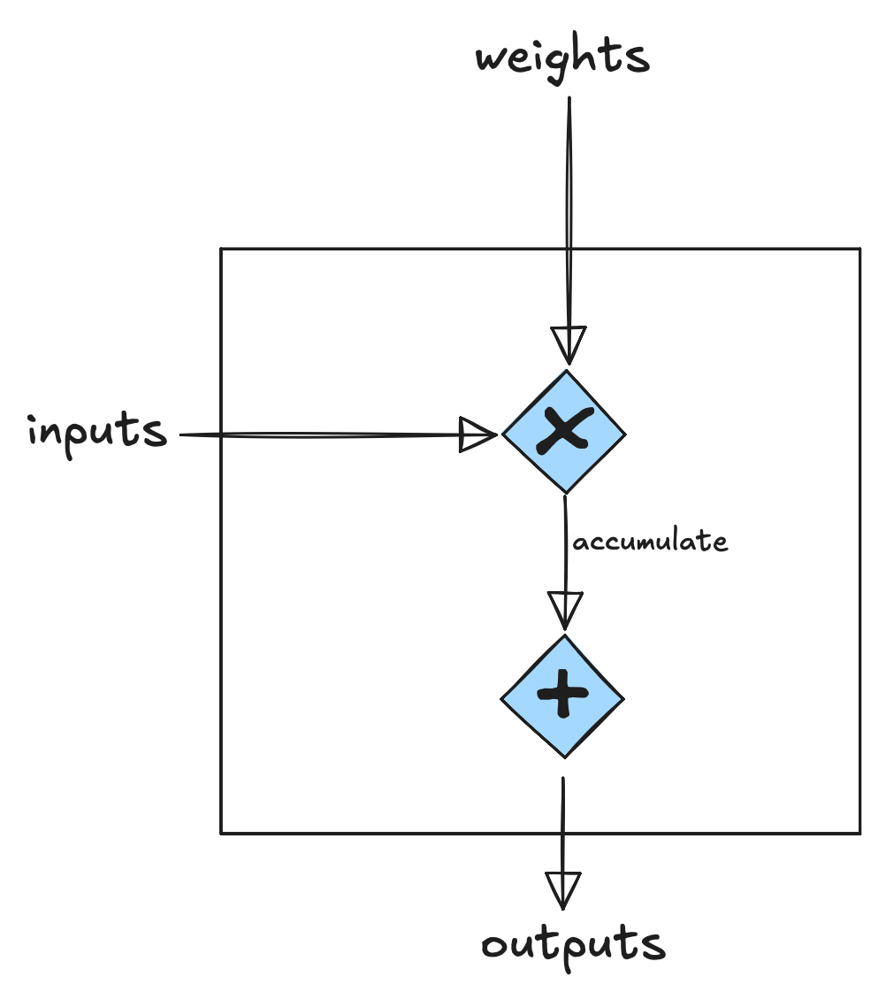
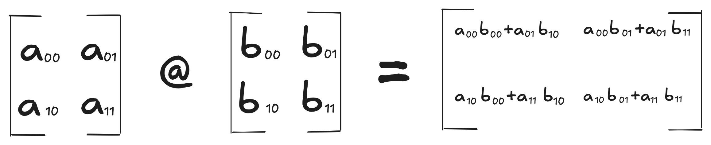
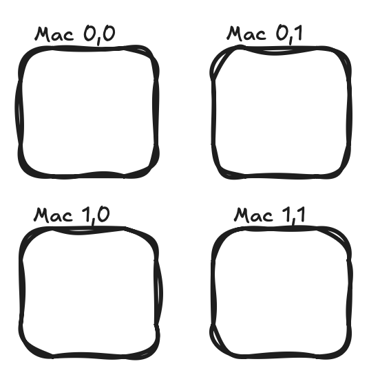

We had no previous chip design knowledge, so we decided to figure it out ourselves and see how far we could get! We wanted to demystify AI hardware by building a fully functional LPU from scratch.
What was our goal with this project?
We had no guide or course that teaches chip design at our university. We had taken a digital logic course, but were disappointed with the fact that the most complex project we did was building a full adder in Quartus using logic blocks, not even RTL! Therefore, we decided to challenge ourselves to dive deep into ML hardware and learn as much as we could on our own. We wanted to prove that high school math (like \(y = mx + b\)) and basic logic circuits are enough to help anyone understand how modern AI hardware works.
We also realized that we had been outsourcing our thinking and understanding to AI a lot recently, so we wanted to build something where we had ownership over in terms of our own thinking and design. We acknowledge that AI is used vastly in today’s age to accelerate processes, but we wanted to use it in a manner where were not outsourcing our learning or understanding.
Our process
No matter what we did, we first started by drawing it out. From the most minor details to big overarching ideas, drawing always got us thinking and visualizing the problems and the steps to take to solve them. From there, we verified that our ideas fit the philosophy of an LPU and moved on to minimal coding exercises (i.e getting AI to build us a skeleton of a verilog module with inputs and outputs described and we just have to fill in the middle!) to build a version of the task. This helped us build a great understanding of how everything worked right from the get-go. A major part of using AI was to understand what was actually done, by reading the code and analyzing whether the design was implemented to our perfection.
Background on AI accelerators
So what is an LPU? To answer that, we should explain what isn’t an LPU.
CPUs were never designed with arithmetic workloads in mind. They were designed for general-purpose processing and executing the functions that make a computer function. They also work sequentially, completing tasks one by one. Moreover, a lot of a CPU’s silicon is dedicated to memory cache hierarchies and out-of-order logic, it becomes a bottleneck for ML arithmetic workloads, and that is where GPUs first came into play.
GPUs were made to handle compute-heavy workloads like rendering graphics, but were later adopted for Machine Learning as well. GPUs introduced the concept of parallel arithmetic (computing thousands of math at once). This leads us into modern ML accelerators like TPUs, NPUs and LPUs.
Background on hardware
Prior to starting this project, we thought a project related to building hardware genuinely meant we had to deal with physical objects, such as an arduino board, PCB’s, soldering, etc. It turns out, similarly to how you design a printed circuit board with computer aided design, for digital logic you have to describe the hardware using code! For example, let’s say you are coding a module to add two 8-bit numbers together to get a 9-bit number; here is how you would imagine that in hardware.

In this example, we have two input wires that represent two 8-bit inputs, and an output wire representing a 9-bit output. The “module” in between those wires represents our actual logic of how those two numbers are added together.
This logic in SystemVerilog can be represented as:
module adder (
input [7:0] a,
input [7:0] b,
output [8:0] sum
);
assign sum = a + b;
endmoduleNow, to take this from software to hardware, you have to use something known as an FPGA (Field Programmable Gate Array). An FPGA can be used to test that your digital logic actually works in hardware; this is known as synthesis. For this project, we will be using the DE1-Soc board to test our chip, and Quartus to synthesize our design.
What is an LPU?
LPU stands for Language Processing Unit. The LPU differs from a traditional chip in many ways, but the overarching idea is “deterministic execution”. The term deterministic execution refers to the idea that the chip does not know what to do, except what it is told to do, and the result of said execution must have predictable timing. If an operation is executed multiple times, it should take the same number of clock cycles for each execution. Hardware is dumb. A chip does not think. It is just a collection of microscopic physical switches (transistors) arranged to route signals. The philosophy behind the design of the LPU strips complex control logic off the chip and moves all the intelligence to a piece of software called the compiler.
What is a Transformer?
Imagine reading a sentence where words contextually highlight each other. In the sentence "The bank of the river,” the word "bank" connects to "river" rather than "money." That is the idea behind a Transformer: to see what words “attend” to others. To actually generate text, transformers “predict” what the next word is going to be. For example, when you type on your phone and the keyboard suggests the next word, that is the transformer at work predicting what you are going to say next. Therefore, a transformers job is to predict what is going to be said next, which is the basis all modern LLM’s like GPT, and Claude are built on.
The Model We Targeted: MicroGPT
MicroGPT is a scaled down Transformer that is trained on simple text, like names to predict the next character in the sequence. Next-token generation is the process of predicting the very next word based on previous context, repeating this loop over and over. Our focus was not on scale, but on validating the core concept.If we can prove why a module can run a certain arithmetic operation efficiently, we can scale it up given the tools we have today, but the most important part remains proving why something works. By using MicroGPT we got rid of any unnecessary parameters and isolated the most important idea of the entire project.
These two formulas may seem scary to you, however we will walk you through how we developed our chip to be able to solve these equations, and what significance these formulas have!
MXM
Over 90% of arithmetic work in a typical transformer can be expressed as matrix multiplications (matmul), making matmul acceleration very critical for modern AI accelerators. Inside the LPU, the Matrix Execution Module (MXM) is responsible for accelerating these matmuls.
Aside from accelerating matmuls, it should also fit the philosophy of the LPU; it should be deterministic. The term Deterministic refers to the idea that the timing of every matmul must be predictable, we should know exactly how many clock cycles the MXM will take to finish every matmul. To meet this criteria we decided to make the hardware as dumb as possible.
When we say the hardware is "dumb," we are not referring to its accuracy or performance. Instead, it requires explicit instructions, like an instruction manual, that specifies when to load weights and inputs, start a matrix multiplication, or accumulate outputs.
The first step to design our MXM was to understand the anatomy of a matmul. At its core, the matmul consists of many independent dot products between rows and columns of two different matrices. Each dot product requires a sequence of multiplications, followed by additions, which can be implemented through a multiply-accumulate (MAC) unit.
The MAC unit then becomes the fundamental computational block of our MXM.

Now to zoom out, and understand how these dot products are arranged in a matmul, let’s look at an example for a 2x2 @ 2x2 matmul, and write out the resultant dot products.

We notice that the dot products are also in an array, and if each MAC unit is responsible for one dot product, we can arrange these MAC blocks into something known as a MAC array!
To understand how the MAC array works, let’s look at the first outer product of the matmul:


When we place initial outer products inside the mac array, we get this arrangement:

Over here, we can observe from the topology of the matmul that the rows of the MAC array share inputs (highlighted in green), and the columns share the weights (highlighted in red). As a result, when we wire the array, we can have a row of the MAC share the input wire, and a column share a row wire.
A MAC array also allows us to introduce “parallelism”, meaning each MAC unit can compute dot product, and accumulate independently!
When we introduce the wires into the MAC array, it can be visualized as:

In the diagram above, the green wires carry the inputs to the right, and the red wires carry the weights down a column.
This is how we first visualized the MXM! We then realized that for this arrangement, inputs would need to pass through a MAC unit before reaching downstream MACs. Meaning if we want i00 to go to MAC 0,1, it would have to go through MAC 0,0. It would mean that for MAC 0,1 to compute its respective dot product, it would be dependent on MAC 0,0’s timing.
We decided that the inputs and weights should arrive at their respective MACs at the same time to maintain our idea of independence. That would cause the MAC array to look something closer to this visualization:

This tweak in the design allowed for us to bring our idea of inputs and weights arriving at their respective MAC’s without delays. This style of wiring also introduces a potential flaw in the design. The wiring gets increasingly more complicated as the design scales up. This is only a 2x2 MXM, whereas the real LPU is a 320x320 grid. Having these large wires between the MAC units may cause further complications when it comes to bringing the hardware into reality, whether in FPGA or an actual tapeout (physical silicon).
Our original design is closer to what modern ASIC’s actually use for accelerating matmuls, and that design is known as the famous Systolic Array!
Over here we can see the differences in the wiring of our original design, and the design we settled on.
A goal we had for this project was to build an intuition for invention, rather than building pre-existing architectures, therefore we went ahead with our version of the MXM! .